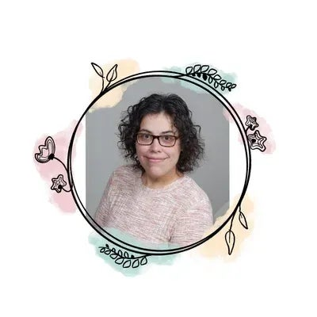

Coaching.
Explore coaching sessions with Ana, with a focus on clarity, boundaries, and intentional change.
Explore coaching sessionsWork with Ana Sholin to explore clarity, boundaries, and intentional change. Book a coaching session, view her speaker profile for your event, or explore journals and courses.
Browse journals & coursesAna Sholin · Founder of Tomorrow Heals

Start a conversation, bring a new perspective to your event, or explore a resource in your own time.
Explore coaching sessions with Ana, with a focus on clarity, boundaries, and intentional change.
Explore coaching sessionsExplore Ana’s resilience speaking and find her speaker profile and one-sheet for your event planning.
View speaker profileDiscover journals, courses, and writing to explore at your own pace, wherever you are in your next chapter.
Browse the resourcesI’m Ana Sholin—a resilience speaker, NLP Life Coach, Reiki Master Practitioner, and founder of Tomorrow Heals.
My work centers on helping individuals create clarity, boundaries, and intentional change. Here, you can find coaching sessions, explore my speaking profile, and discover journals and learning resources.
There isn’t one right place to begin. Choose the next step that feels right for you.
Discover Tomorrow HealsExplore the journals, courses, and writing linked from Ana’s original collection.
Showing all 5 resources
A journal from Ana’s collection. Explore the details and purchase options on Payhip.
Explore the journalExplore the course linked in Ana’s collection, including its full description and enrollment details.
View course detailsExplore the linked course and its approach to recognizing and changing workplace patterns.
View course detailsDiscover this wellness resource from Ana’s collection and view the full details on Payhip.
Explore the resourceRead Ana’s writing and explore the Tomorrow Heals journal on Substack.
Read on SubstackSome course links may earn a commission. Prices, availability, and enrollment details are shown on the linked provider pages. Resource illustrations are decorative, not product cover images.
Use the booking link to visit Ana’s calendar. You can view the available session options, scheduling details, and any listed fees before booking. Open the booking calendar ↗
Ana’s Innovation Women profile is the place to view her speaker information and one-sheet. View the speaker profile ↗
Visit the Tomorrow Heals collection for its current links and offerings. You can also follow Tomorrow Heals on Facebook or read the journal on Substack.
You can browse the journal, writing, courses, and wellness resource independently. Each provider page explains its format, access, and purchase terms.
Start with a conversation, a page in a journal, or a new perspective. Explore what feels right for you.
Find a session with Ana